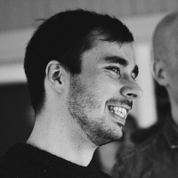

Doctoral Candidate, Computational Chemistry
Aalto University
Helsinki, Finland
Rasmus is a materials modelling and data science enthusiast pursuing a doctoral degree in computational chemistry at Aalto University. Since 2018, he has been exploring the structure and chemical reactivity of dynamic solid-liquid interfaces by means of numerical computer simulations. At interfaces the symmetries of the respective bulk materials are broken, thus forming a potential site for exciting phenomena such as the catalysis of chemical reactions. Notably, solid-liquid interfaces play a vital part in electrochemical devices, such as fuel cells, as their performance is ultimately determined by the numerous physicochemical phenomena that occur at the interface between the solid electrode and the liquid electrolyte. Understanding these processes at the level of atoms and electrons is essential in order to rationally design sustainable materials for renewable hydrogen-based energy technologies, a topic which Rasmus is particularly passionate about.
The simulations Rasmus is running are based on the complex mathematical formalisms of quantum mechanics, more specifically density functional theory, and would not be possible without the usage of high-performance computing resources and massively parallel electronic structure codes. Interpreting the output data requires tailored analyses which Rasmus implements using primarily the Python scientific computing stack. Rasmus has a keen interest also in machine learning methods that he is convinced will advance materials science by enabling high-throughput modelling workflows including enhanced analysis of large datasets.
In his free time, Rasmus practices Aikido, a Japanese martial art the fundamental principle of which builds on the utilization and redirection of an attacker’s momentum in order to execute soft counter-techniques with minimal effort and damage inflicted.
Education
- D.Sc. (Tech.) in Computational Chemistry, 2018—present
- Aalto University, Finland
- M.Sc. (Tech.) in Physical Chemistry (with distinction), 2016—2018
- Aalto University, Finland
- B.Sc. (Tech.) in Chemical Engineering (with distinction), 2013—2016
- Aalto University, Finland
Work Experience
- Doctoral Candidate, Aalto University, Aug 2018—present
-
Molecular dynamics and reactivity simulations (CP2K)
Data analysis including machine learning (Python, Fortran)
Supervision of research assistants and teaching of undergraduates
Member of faculty-level administrative committees
Research group website maintenance - Research Assistant, Aalto University, Jun 2015—Jul 2018
-
Adsorption, molecular dynamics and charge transfer simulations (CP2K)
Electrochemical measurements (Voltammetry, impedance spectroscopy)
Data analysis (Python, MATLAB)
Teaching of undergraduates - Crystal Growing Processor, Okmetic Ltd, May 2014—Sep 2014
-
Production of monocrystalline silicon (Czochralski method)
Process quality control
Production database management
For more details please see my LinkedIn profile.
Publications
A full list of my publications can be found on the publications page.